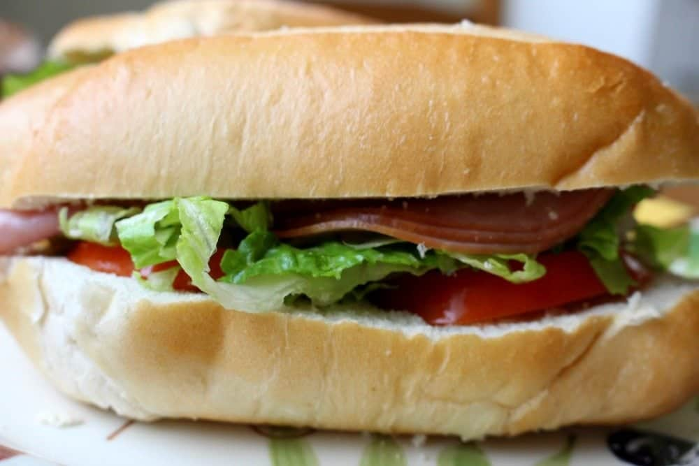

Home
Torta de Jamon

Description
Torta de Jamon is essentially a Mexican ham sandwich. It was popularized
by the Mexican TV show, El Chavo. The show was about a homeless boy who
lived in a barrel and would crave for a torta in pretty much every episode.
There are many ways this sandwich can be prepared and options of meats that
can be used, but for this recipe we will stick to the ham style version.
Ingredients
- 1 telera or bolillo, sliced in half
- 1 tablespoon mayonnaise
- 2 slices ham
- 2 slices tomatoes
- 1 leaf lettuce thinly sliced
- Pickled jalapenos as many as you like
- Avocado slices optional
Steps
- Cut bread in half.
- Smear mayo on one side of the bread.
-
To the bottom half of the bread, add ham, tomato, lettuce,
jalapenos, and avocado (if using).
- Top with other half of the bread.
-
You can toast the sandwich for a few minutes on each side over
a hot griddle.
- Or skip altogether the toasting part, and enjoy!